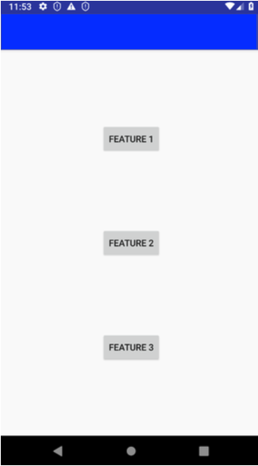

Page object
How to make tests more clear and readable?
Problem:
There is a lot of ViewMatchers and so on in our tests once we need to find exact View.
Imagine that we do have hundreds of tests that starts with pressing same button. What will be if that button would
change its id? We would change ViewMatcher inside every single test.
Also there is a problem if our View should be accessed with a lot of ViewMatchers used (for example when that View
is a child of RecyclerView)
What should we do in the above cases? May we should extract this View to another abstraction?
PageObject pattern
Actually that pattern came to Android world from Web testing. This is how PageObject determined by one of its creator:
The basic rule of thumb for a page object is that it should allow a software client to do anything and see anything that a human can. It should also provide an interface that's easy to program to and hides the underlying widgetry in the window. So to access a text field you should have accessor methods that take and return a string, check boxes should use booleans, and buttons should be represented by action oriented method names.
www.martinfowler.com/bliki/PageObject.html
Example
We do have some screen with 3 Buttons

Let's write some test for that screen with plain espresso
@Test
fun testFirstFeature() {
onView(withId(R.id.toFirstFeature))
.check(ViewAssertions.matches(
ViewMatchers.withEffectiveVisibility(
ViewMatchers.Visibility.VISIBLE)))
onView(withId(R.id.toFirstFeature)).perform(click())
}
That test finds one of our button then checks its visibility and after that performs usual click.
Main problem here — it's not easy to read.
What do we want to achieve with PageObject?
Ideally we want to have something like
@Test
fun testFirstFeature() {
MainScreen.firstFeatureButton.isVisible()
MainScreen.firstFeatureButton.click()
}
What is the difference we can see here?
- We use
ViewMatcherinside of our test - We added
MainScreenabstraction that actually is aPageObjectof screen provided in example isVisible()andclick()are extensions (for example)
As you can see that change made our code more clear and readable. And that happened even with one single test that checks visibility of button and clicks on it.
Just imagine how much effort that pattern will bring to your codebase in case of hundreds tests written
with PageObject
Instead of writing your own implementation of PageObject pattern
Just take a look for Kakao library it has a modern Kotlin DSL implementation
of PageObject pattern
A lot of useful classes for interact with.
For example, same test for our screen written with Kakao library will look like
@Test
fun testFirstFeature() {
mainScreen {
toFirstFeatureButton {
isVisible()
click()
}
}
}
Conclusion
PageObject pattern helps us to:
➕ Remove duplicates of ViewMatchers from tests
➕ Once we change id/text/whatever of View we should change it only in one place of PageObject class
➕ New abstraction to make code more readable and clear